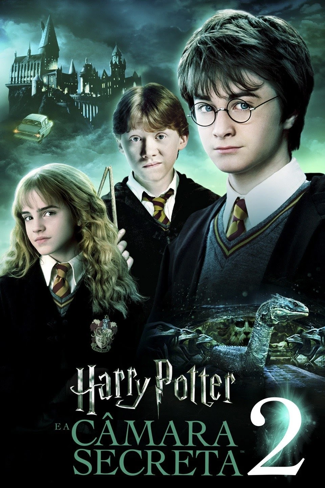

Harry Potter e a Pedra Filosofal

"Harry Potter e a Pedra Filosofal" é o primeiro filme da amada série baseada nos livros de J.K. Rowling. Lançado em novembro de 2001, o filme cativou o público com sua história mágica e envolvente. A trama segue o jovem bruxo Harry Potter, que descobre aos onze anos que é um bruxo e é convidado a estudar na Escola de Magia e Bruxaria de Hogwarts. Lá, ele faz amizade com Ron Weasley e Hermione Granger, e juntos enfrentam desafios enquanto descobrem segredos sobre o passado de Harry, incluindo seu encontro com o maligno bruxo Voldemort. O filme encantou espectadores de todas as idades com sua narrativa emocionante, e desde então se tornou um clássico do cinema fantástico.
Harry Potter e a Câmara Secreta
"Harry Potter e a Câmara Secreta" é o segundo filme da saga baseada nos livros de J.K. Rowling e foi lançado em novembro de 2002. A trama acompanha Harry Potter em seu segundo ano na Escola de Magia e Bruxaria de Hogwarts, onde descobre uma misteriosa câmara secreta que guarda um terrível segredo. Enquanto alunos começam a ser petrificados misteriosamente, Harry, Ron e Hermione se envolvem em uma investigação para desvendar a verdade por trás dos ataques, revelando uma trama sombria que remonta ao passado da escola. Com uma mistura de magia, suspense e aventura, o filme prendeu a atenção do público, proporcionando mais uma emocionante viagem ao mundo fantástico de Hogwarts.
Harry Potter e o Prisioneiro de Azkaban
"Harry Potter e o Prisioneiro de Azkaban" é o terceiro filme da adorada série baseada nos livros de J.K. Rowling, lançado em junho de 2004. A trama segue Harry Potter em seu terceiro ano na Escola de Magia e Bruxaria de Hogwarts, quando um perigoso prisioneiro chamado Sirius Black escapa da prisão de Azkaban e é rumores de estar à procura de Harry. Enquanto isso, Harry descobre segredos sobre seu passado e o envolvimento de seus pais na luta contra o maligno bruxo Voldemort. Com a ajuda de seus amigos Ron e Hermione, Harry enfrenta desafios emocionantes e perigosos, explorando novos mistérios e revelações sobre o mundo da magia. O filme foi aclamado por sua direção inovadora e atmosfera mais sombria, proporcionando uma experiência cinematográfica emocionante para fãs de todas as idades.
Harry Potter e o Cálice de Fogo
"Harry Potter e o Cálice de Fogo" é o quarto filme da renomada série baseada nos livros de J.K. Rowling, lançado em novembro de 2005. Na trama, Harry Potter enfrenta desafios ainda mais complexos quando é inesperadamente selecionado para competir no Torneio Tribruxo, um perigoso torneio mágico entre três escolas de magia. Enquanto lida com os desafios da competição, Harry também enfrenta visões perturbadoras que o levam a descobrir a ressurgência de Voldemort e seus seguidores. Com a ajuda de seus amigos Ron e Hermione, Harry enfrenta perigos mortais enquanto tenta desvendar os mistérios que cercam o torneio e seu próprio destino. O filme foi aclamado por sua emocionante trama, efeitos especiais impressionantes e performances cativantes, proporcionando aos fãs uma emocionante continuação da saga de Harry Potter.
Harry Potter e a Ordem da Fênix
"Harry Potter e a Ordem da Fênix" é o quinto filme da aclamada série baseada nos livros de J.K. Rowling, lançado em julho de 2007. Na trama, Harry Potter retorna à Escola de Magia e Bruxaria de Hogwarts para seu quinto ano de estudos, mas encontra um clima sombrio e tumultuado. Com a negação do Ministério da Magia sobre o retorno de Voldemort, Harry e seus amigos formam a Ordem da Fênix, uma organização secreta dedicada a combater as forças das trevas. Enquanto isso, Harry enfrenta desafios pessoais, incluindo visões perturbadoras e conflitos com as autoridades escolares. O filme explora temas de amizade, coragem e resistência em face da adversidade, cativando o público com sua emocionante narrativa e efeitos visuais impressionantes.
Harry Potter e o Enigma do Príncipe

"Harry Potter e o Enigma do Príncipe" é o sexto filme da amada série baseada nos livros de J.K. Rowling, lançado em julho de 2009. Na trama, Hogwarts enfrenta uma nova ameaça quando o bruxo das trevas Voldemort fortalece seu poder e espalha o medo pelo mundo mágico. Enquanto isso, Harry Potter recebe aulas particulares de seu mentor, Alvo Dumbledore, para descobrir os segredos do passado de Voldemort e encontrar uma maneira de derrotá-lo. Enquanto investigam, Harry e seus amigos descobrem um enigma envolvendo um misterioso livro de poções e a história de um enigmático príncipe. O filme combina elementos de mistério, romance e intriga, oferecendo aos fãs uma jornada emocionante enquanto se aproximam do confronto final entre Harry e Voldemort.
Harry Potter e as Relíquias da Morte: Parte 1
"Harry Potter e as Relíquias da Morte: Parte 1" é a primeira parte do épico final da saga baseada nos livros de J.K. Rowling, lançado em novembro de 2010. O filme segue Harry, Ron e Hermione em uma perigosa jornada para destruir as Horcruxes, objetos que contêm fragmentos da alma de Voldemort e garantem sua imortalidade. Com Hogwarts sob o controle das forças das trevas, os três amigos são forçados a fugir e enfrentar desafios cada vez mais perigosos enquanto tentam desvendar os segredos do passado de Voldemort. O filme é uma emocionante aventura repleta de ação, suspense e momentos emocionantes, preparando o terreno para o confronto final entre Harry e o bruxo das trevas.
Harry Potter e as Relíquias da Morte: Parte 2
"Harry Potter e as Relíquias da Morte: Parte 2" é a conclusão emocionante da saga baseada nos livros de J.K. Rowling, lançado em julho de 2011. No desfecho épico, Harry Potter, junto com seus amigos Ron e Hermione, enfrenta o confronto final com o bruxo das trevas Voldemort. Enquanto as forças do bem e do mal se preparam para a batalha definitiva em Hogwarts, Harry descobre a verdade sobre as Relíquias da Morte e enfrenta seu destino como o Menino que Sobreviveu. O filme é uma montanha-russa de emoções, repleto de momentos de ação, sacrifício e redenção, proporcionando um encerramento satisfatório e emocionante para uma das sagas mais queridas da literatura e do cinema.